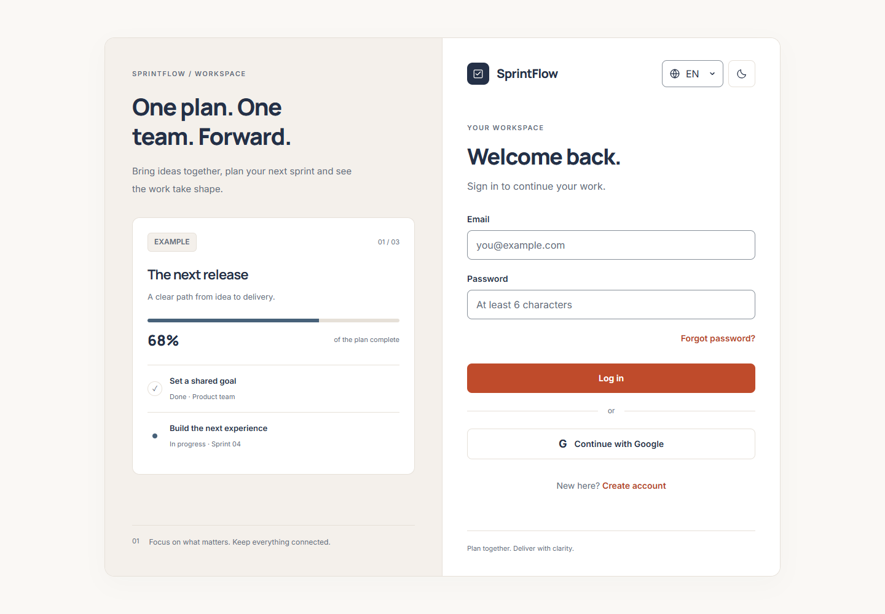
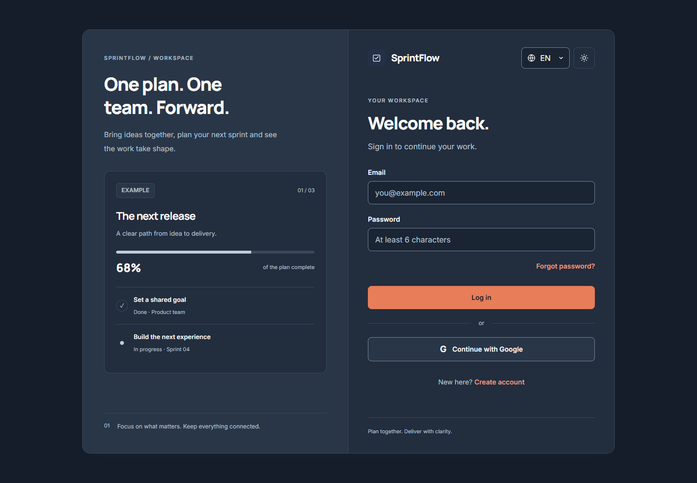
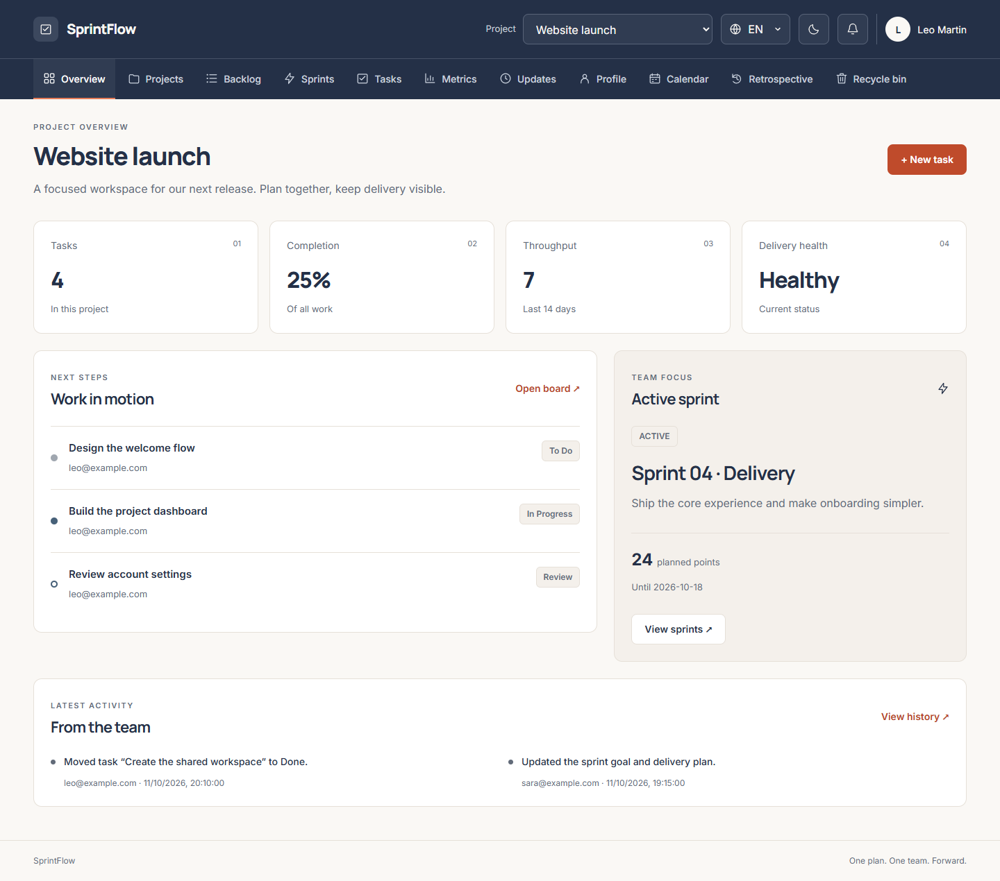
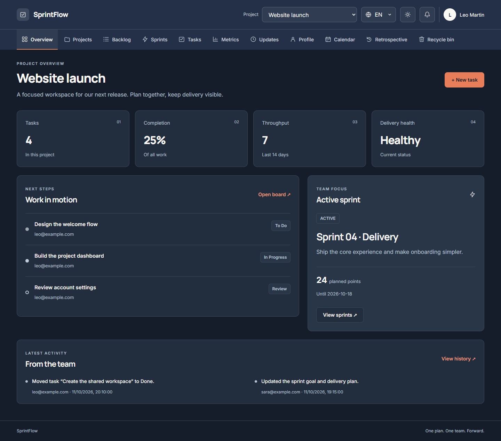
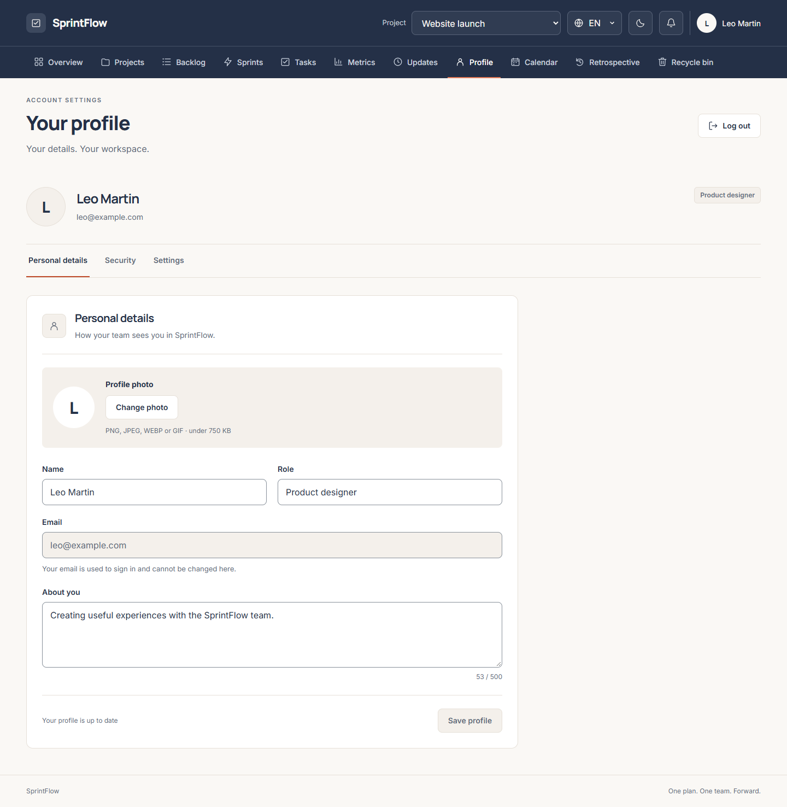
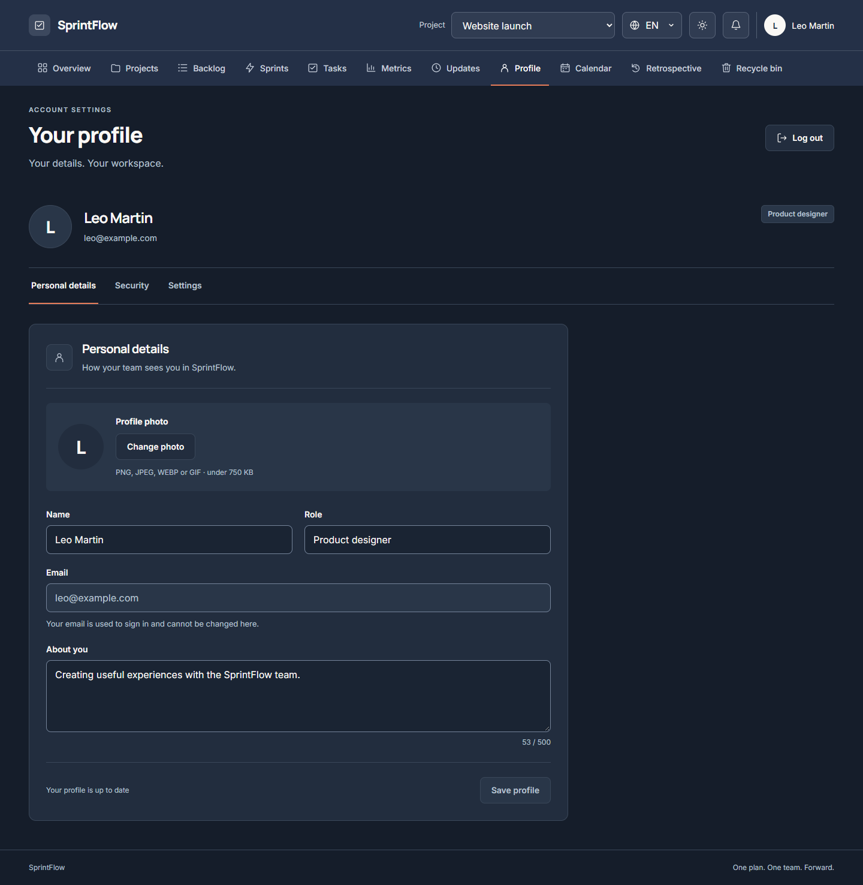
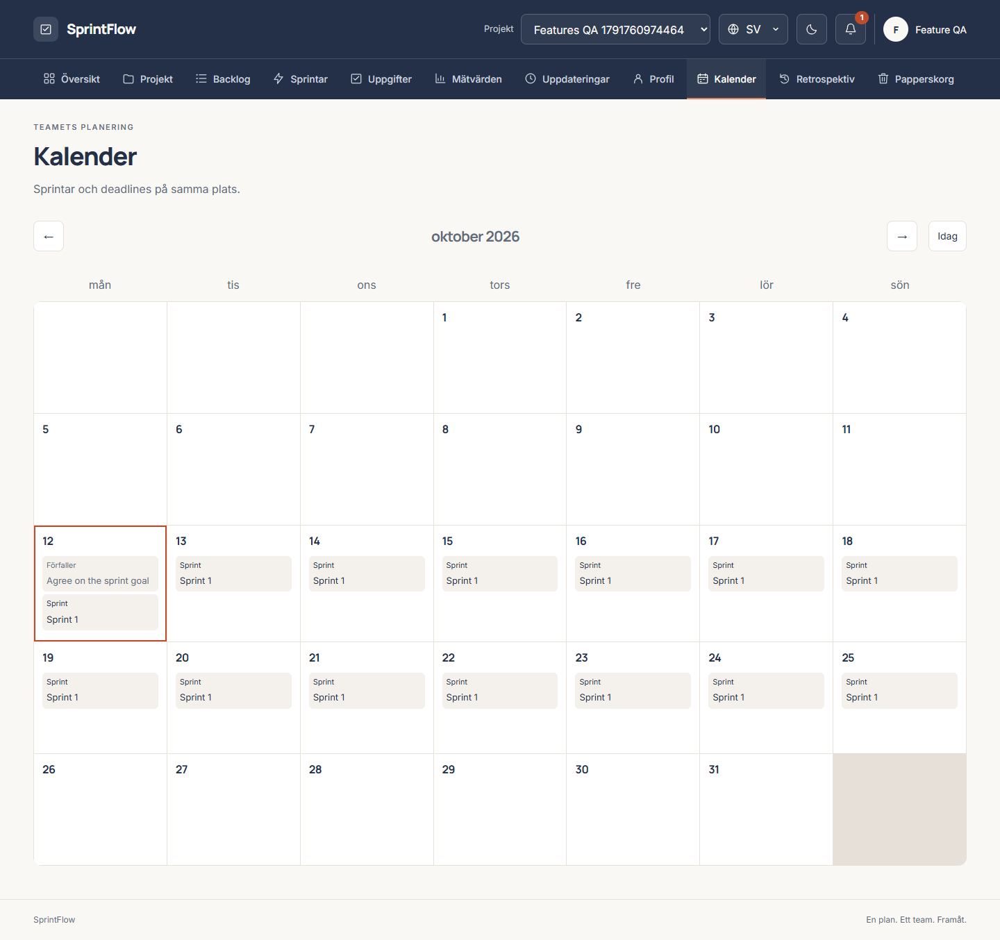
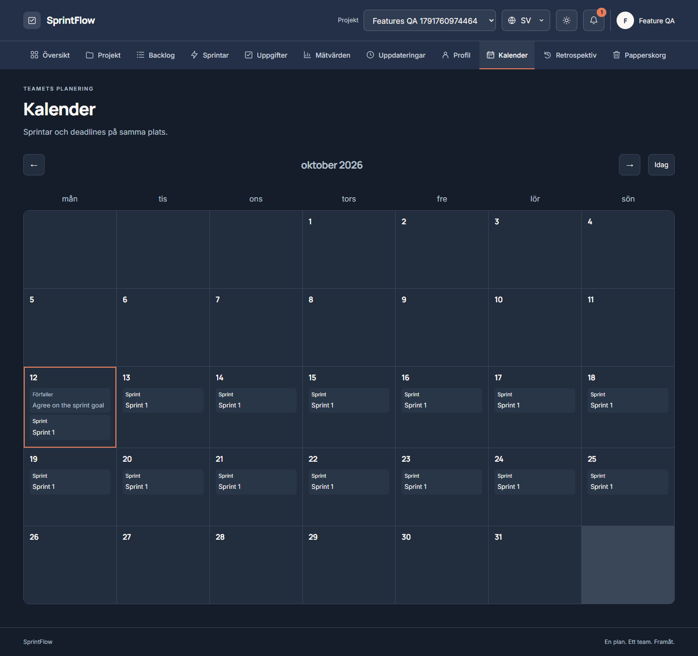
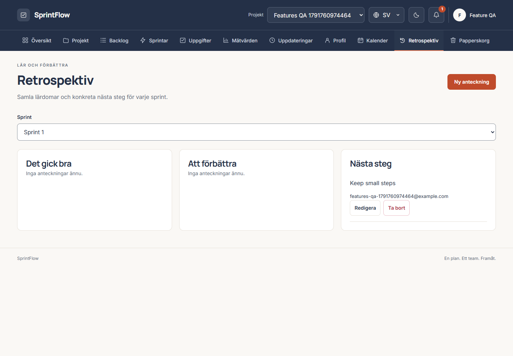
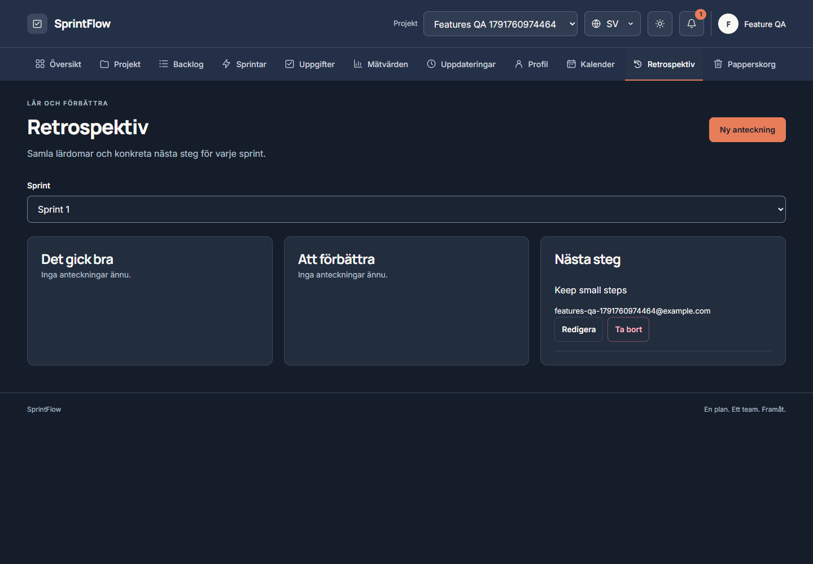

SprintFlow / Editorial Studio
Aktuella förhandsbilder från den lokalt testade versionen den 12 oktober 2026. Exempeldata och isolerade testkonton används.
Inloggning




Arbetsytan




Profil




Kalender




Retrospektiv



